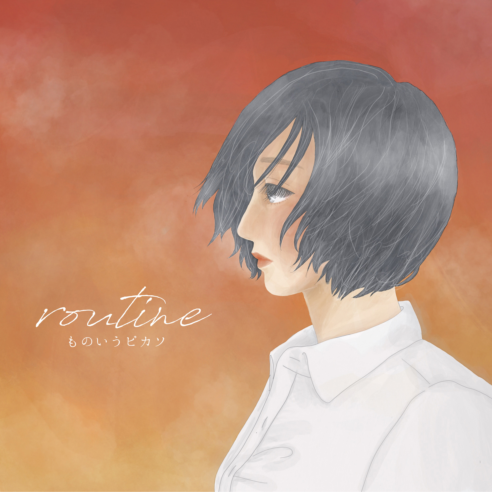

不和の瑠璃 甘い恋だと信じていた。 瑠璃色の道は夜へと沈む。 作詞 マナミ / 作曲 ものいうピカソ / 絵 マナミ Digital only 2021.08.28 リリース Youtube / 各種配信サービス
白が染まる色 漂う感情が私を染めていく。 切なさに一輪の花を添えて、奏でるワルツ。 作詞 ナカノ / 作曲 ものいうピカソ / 絵 ナカノ Digital only 2020.03.14 リリース Youtube / 各種配信サービス
 rouine ものいうピカソ初のシングル。 茜色の空の下、思いは巡る。 作詞 イシカワ / 作曲 ものいうピカソ / 絵 あおのこ Digital only 2019.05.05 リリース Youtube / 各種配信サービス